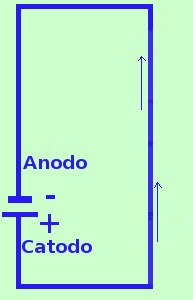

|
 La corrente elettrica e' un flusso di elettroni, particelle di carica negativa. All'inizio dello studio dell'elettricita' i ricercatori credevano che a muoversi fossero le cariche positive e quindi la corrente elettrica venne studiata e codificata con questa convinzione Quando si accorsero che a muoversi su fili metallici erano invece solamente le cariche negative era ormai troppo tardi: invece di riscrivere tutte le regole, ed in considerazione del fatto che in altri ambienti (soluzioni elettrolitiche) si muovono sia ioni positivi che negativi, si preferi', per convenzione, considerare in fisica la corrente generata da una pila come un flusso che va dal polo positivo (catodo) al polo negativo (anodo) |